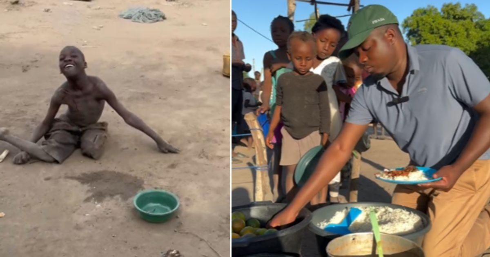

💔 Ernesto precisa da sua ajuda para salvar crianças que estão morrendo de fome
 ✅ História Verificada
✅ História Verificada
Hoje eu chorei vendo os vídeos que esse rapaz nos mandou, dói só de imaginar como algumas pessoas enfrentam tantas dificuldades para viver.
O Ernesto é de Moçambique. Não sei se vocês se lembram disso, mas em 2019 o país enfrentou um ciclone enorme que causou centenas de mortes e milhares ficaram desabrigados, foi nessa época que o Ernesto começou a ajudar as pessoa. A tragédia era tão grande que eles nem sabiam por onde começar e diante de tudo que ele via, não podia ficar parado. Moçambique já é um país considerado pobre e até hoje eles não conseguiram se recuperar de tudo que aconteceu..
É graças a pessoas como o Ernesto que muitos conseguem comer, se tratar, viver..
A luta deles é diária para levar um mínimo de dignidade a quem não tem nada. Com a ajuda de doações, eles conseguem alimentar mais de 600 crianças por semana. Para 70 delas, o alimento chega numa escolinha em uma igreja. Para muitas, aquele almoço é a única refeição do dia. Mais de 500 outras crianças, numa comunidade diferente, dependem do almoço servido todos os dias enquanto sonham com um orfanato.
A realidade que Ernesto encontra é de partir o coração. A maioria das pessoas não tem casa, não tem comida, não tem roupa. A miséria é tamanha que vai além da fome: muitos sofrem com doenças, alguns não andam, são cegos, e o mais cruel é que não conseguem sequer tratamento. É uma situação realmente de chorar.
"Ernesto e sua equipe (são 15 voluntários) não param na alimentação. Eles também constroem casas. Já entregaram 15, um número que, perto da necessidade, pode parecer pequeno, mas que, pelas condições do país, é muito."
Já pensei em desistir… Mas levar essa ajuda aos mais necessitados é um desafio imenso. Eles possuem apenas uma moto velha. Com ela, chegam a viajar 13 horas para atender famílias em aldeias distantes. Pense no impacto que seria ter um carro – o sonho de Ernesto – para levar mais alimentos, mais cestas básicas, mais esperança em cada viagem..
A dedicação de Ernesto é total. Ele é casado, tem 2 filhos biológicos e, mesmo com todas as dificuldades, adotou mais 9 crianças, moram todos juntos. Ele vive para ajudar essas pessoas.
Os recursos necessários são básicos mas urgentes. Para alimentar as crianças por apenas uma semana, , ele precisa de 8 sacos de arroz de 25 kg, 50 quilos de feijão e 40 frangos. A quantidade de carne é chocante: apenas 40 frangos para mais de 600 crianças por uma semana. Isso mostra que eles mal conseguem comer o suficiente.
São tantas as necessidades
É difícil saber por onde começar a ajudar, mas essa história nos mostra que a diferença está nas mãos de quem se move. Sua doação, por menor que pareça, pode ser o único almoço do dia para uma criança, o tijolo que constrói uma casa, ou o combustível que leva esperança a uma família distante
Gusttavo Limma e outro empressario estão nessa causa tambem e DOBRARAM cada doação que for feita ao Ernesto, isso vai ajudar DEMAIS e agora mais do que nunca precisaremos da sua ajuda!!! Se você está lendo isso agora, eu te peço com o coração aberto: nos ajude. Assista nosso vídeo. Veja com seus próprios olhos quem é o Ernesto, quem somos nós. E se puder doar qualquer valor, saiba que estará ajudando a continuar lutando juntos — com dignidade, com carinho, com esperança. Você pode ser a diferença entre a dor e o alívio. Entre o desespero e a esperança.
Você receberá:
● Atualizações semanais da nossa jornada
● Vídeo do primeiro abraço em cada nessecitado
● Seu nome na nossa lista de anjos (se desejar)
Compartilhe nossa história. Cada compartilhamento é uma nova chance de devolver a infância e dignidade
Que Deus abençoe você e a sua família.
Att: Ernesto.